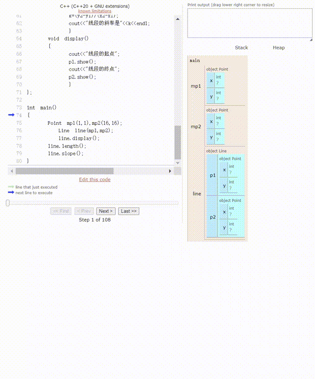
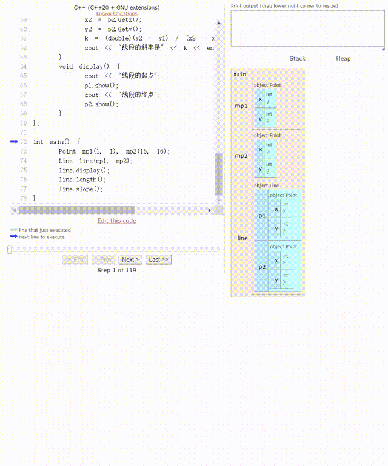

问题描述
有代码如下。请运行程序，并按照要求完成如下任务。
1、请分析代码的运行结果，并画出程序运行期间，内存分配情况；
2、请在程序中添加Point的析构函数和Line的析构函数。在两个析构函数中只需要进行信息输出即可。请给出修改后的完整代码，并将自己添加的代码用红色标出；
3、运行加入析构函数后的代码，分析其运行结果，并说明其与未加析构函数的时候的结果的不同之处，并说明原因；
4、请将程序中语句Line(Point pp1,Point pp2):p1(pp1),p2(pp2)，修改为Line(Point &pp1,Point &pp2):p1(pp1),p2(pp2)。然后运行程序，说明修改前后程序的运行结果区别及其原因。
#include <iostream> #include <math.h> using namespace std;class Point {public : Point (int a,int b) { x=a; y=b; cout<<"构造了一个点" <<"(" <<x<<"," <<y<<")" <<endl; } int Getx () { return x; } int Gety () { return y; } void show () { cout<<"横坐标:" <<x<<",纵坐标:" <<y<<endl; } private : int x,y; }; class Line {private : Point p1,p2; public : Line (Point pp1,Point pp2):p1 (pp1),p2 (pp2) { cout<<"构造了一条线段" <<endl; } void length () { double len; int x1,y1,x2,y2; x1=p1.Getx (); y1=p1.Gety (); x2=p2.Getx (); y2=p2.Gety (); len=sqrt ((x2-x1)*(x2-x1)+(y2-y1)*(y2-y1)); cout<<"线段的长度是" <<len<<endl; } void slope () { double k; int x1,y1,x2,y2; x1=p1.Getx (); y1=p1.Gety (); x2=p2.Getx (); y2=p2.Gety (); k=(y2-y1)/(x2-x1); cout<<"线段的斜率是" <<k<<endl; } void display () { cout<<"线段的起点" ; p1.show (); cout<<"线段的终点" ; p2.show (); } }; int main () Point mp1 (1 ,1 ) ,mp2 (16 ,16 ) ; Line line (mp1,mp2) ; line.display (); line.length (); line.slope (); }
运行后输出
构造了一个点(1,1) 构造了一个点(16,16) 构造了一条线段 线段的起点横坐标:1,纵坐标:1 线段的终点横坐标:16,纵坐标:16 线段的长度是21.2132 线段的斜率是1
1.
程序的运行结果与内存分配情况
调用构造函数Point(int a,int b)创建两个Point对象：mp1和mp2。
对于mp1(1,1)，输出：构造了一个点(1,1)
对于mp2(16,16)，输出：构造了一个点(16,16)
调用构造函数Line(Point &pp1,Point &pp2):p1(pp1),p2(pp2)创建一个Line对象line。
事实上这里的值传递调用了默认的拷贝构造函数，要想打印日志可以在class Point:public中添加拷贝构造函数：
Point (const Point &p) { x = p.x; y = p.y; cout << "拷贝构造了一个点(" << x << "," << y << ")" << endl; }
此时会输出：
拷贝构造了一个点(16,16) 拷贝构造了一个点(1,1) 拷贝构造了一个点(1,1) 拷贝构造了一个点(16,16) 构造了一条线段
可以看到这两个点分别被高倍构造了两次，这是由于构造函数Line(Point &pp1,Point &pp2):p1(pp1),p2(pp2)使用了初始化列表。
具体过程如下：
在创建Line对象时，由于按值传递，mp1和mp2被拷贝到构造函数的形参pp1和pp2。输出：
拷贝构造了一个点(16,16) 拷贝构造了一个点(1,1)
初始化列表中p1(pp1)和p2(pp2)又各引发了一次拷贝构造调用，以初始化Line对象的p1和p2成员。输出：
拷贝构造了一个点(1,1) 拷贝构造了一个点(16,16)
输出构造了一条线段
调用line.display()方法。
输出：线段的起点，随后p1.show()输出：横坐标:1,纵坐标:1
输出：线段的终点，随后p2.show()输出：横坐标:16,纵坐标:16
调用line.length()方法。
调用line.slope()方法。
内存中的分配情况如动图所示：

内存分配动图
2. 添加析构函数
代码如下：
#include <iostream> #include <math.h> using namespace std;class Point {public : Point (int a, int b) { x = a; y = b; cout << "构造了一个点" << "(" << x << "," << y << ")" << endl; } Point (const Point &p) { x = p.x; y = p.y; cout << "拷贝构造了一个点(" << x << "," << y << ")" << endl; } ~Point () { cout << "销毁了一个点" << "(" << x << "," << y << ")" << endl; } int Getx () return x; } int Gety () return y; } void show () cout << "横坐标:" << x << ",纵坐标:" << y << endl; } private : int x, y; }; class Line {private : Point p1, p2; public : Line (Point pp1, Point pp2) : p1 (pp1), p2 (pp2) { cout << "构造了一条线段" << endl; } ~Line () { cout << "销毁了一条线段" << endl; } void length () double len; int x1, y1, x2, y2; x1 = p1.Getx (); y1 = p1.Gety (); x2 = p2.Getx (); y2 = p2.Gety (); len = sqrt ((x2 - x1) * (x2 - x1) + (y2 - y1) * (y2 - y1)); cout << "线段的长度是" << len << endl; } void slope () double k; int x1, y1, x2, y2; x1 = p1.Getx (); y1 = p1.Gety (); x2 = p2.Getx (); y2 = p2.Gety (); k = (double )(y2 - y1) / (x2 - x1); cout << "线段的斜率是" << k << endl; } void display () cout << "线段的起点" ; p1.show (); cout << "线段的终点" ; p2.show (); } }; int main () Point mp1 (1 , 1 ) , mp2 (16 , 16 ) ; Line line (mp1, mp2) ; line.display (); line.length (); line.slope (); }
3. 运行加入析构函数后的代码
运行后输出：
构造了一个点(1,1) 构造了一个点(16,16) 拷贝构造了一个点(16,16) 拷贝构造了一个点(1,1) 拷贝构造了一个点(1,1) 拷贝构造了一个点(16,16) 构造了一条线段 销毁了一个点(1,1) 销毁了一个点(16,16) 线段的起点横坐标:1,纵坐标:1 线段的终点横坐标:16,纵坐标:16 线段的长度是21.2132 线段的斜率是1 销毁了一条线段 销毁了一个点(16,16) 销毁了一个点(1,1) 销毁了一个点(16,16) 销毁了一个点(1,1)
可以看到，当对象的生命周期结束时，会自动调用析构函数。
由于构造函数Line(Point pp1, Point pp2) : p1(pp1), p2(pp2)为值传递，故在函数执行完后形参被销毁，输出：
Line对象的析构，输出：
销毁了一条线段 销毁了一个点(16,16) 销毁了一个点(1,1)
Point对象的析构，输出：
4.
修改Line构造函数的参数为引用类型
将Line(Point pp1,Point pp2):p1(pp1),p2(pp2)，修改为Line(Point &pp1,Point &pp2):p1(pp1),p2(pp2)
运行后输出：
构造了一个点(1,1) 构造了一个点(16,16) 拷贝构造了一个点(1,1) 拷贝构造了一个点(16,16) 构造了一条线段 线段的起点横坐标:1,纵坐标:1 线段的终点横坐标:16,纵坐标:16 线段的长度是21.2132 线段的斜率是1 销毁了一条线段 销毁了一个点(16,16) 销毁了一个点(1,1) 销毁了一个点(16,16) 销毁了一个点(1,1)
可以看到，使用引用方法后，构造函数Line(Point &pp1,Point &pp2):p1(pp1),p2(pp2)在创建pp1,pp2时不会调用拷贝构造函数Point(const Point &p)，所以只是在初始化列表中调用了拷贝构造函数Point(const Point &p)，并且也不需要销毁临时变量。
以下是程序运行动图： 